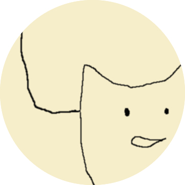

Hi! I am Sorami Hisamoto.
You can also find me on
Twitter
and
GitHub
.
You can find my slides from the presentations
here
.
Interests
Natural Language Processing, Information Retrieval, and Data Visualization.
Publications (refereed)
Membership Inference Attacks on Sequence-to-Sequence Models: Is My Data In Your Machine Translation System?
Sorami Hisamoto
, Matt Post, Kevin Duh
Transactions of the Association for Computational Linguistics
, March 2020. (TACL)
paper
|
slides
Robust Document Representations for Cross-Lingual Information Retrieval in Low-Resource Settings
Mahsa Yarmohammadi, Xutai Ma,
Sorami Hisamoto
, Muhammad Rahman, Yiming Wang, Hainan Xu, Daniel Povey, Philipp Koehn, Kevin Duh
Machine Translation Summit 2019
, August 2019.
Sudachi: a Japanese Tokenizer for Business
Kazuma Takaoka,
Sorami Hisamoto
, Noriko Kawahara, Miho Sakamoto, Yoshitaka Uchida and Yuji Matsumoto
11th edition of the Language Resources and Evaluation Conference Industry Track
, May 2018. (
LREC2018
)
paper
Synergies between Word Representation Learning and Dependency Parsing
Sorami Hisamoto
Master's Thesis
, March 2014.
paper
|
slides
Construction of English MWE Dictionary and its Application to POS Tagging
Yutaro Shigeto, Ai Azuma,
Sorami Hisamoto
, Shuhei Kondo, Tomoya Kouse, Keisuke Sakaguchi, Akifumi Yoshimoto, Frances Yung and Yuji Matsumoto
The 9th Workshop on Multiword Expressions
, June 2013. (
MWE2013, NAACL
)
Publications (not refereed)
chiVe 2.0: SudachiとNWJCを用いた実用的な日本語単語ベクトルの実現に向けて(chiVe 2.0: Towards Practical Japanese Word Embedding using Sudachi and NWJC, in Japanese)
河村宗一郎,
久本空海
, 真鍋陽俊, 髙岡一馬, 内田佳孝, 岡照晃, 浅原正幸
言語処理学会 第26回年次大会
, March 2020 (To appear). (
NLP2020
)
Query Expansion for Cross-Language Question Re-Ranking
Muhammad Mahbubur Rahman,
Sorami Hisamoto
, Kevin Duh
arXiv
, April 2019.
paper
User-Assisted Tabular Extraction in Japanese Invoice
Vincent Leonardo, Yuichiro Shimizu, Kensuke Masugata,
Sorami Hisamoto
, Yoshitaka Uchida, Kazuma Takaoka
言語処理学会 第25回年次大会
, March 2019. (
NLP2019
)
paper
形態素解析器『Sudachi』のための大規模辞書開発(Large Scale Dictionary Development for Sudachi, in Japanese)
坂本美保, 川原典子,
久本空海
, 髙岡一馬, 内田佳孝
国立国語研究所 言語資源活用ワークショップ2018
, September 2018. (
LRW2018
)
paper
Information Extraction from English & Japanese Résumé with Neural Sequence Labelling Methods
Akihiro Katsuta, Hutama Adhi Hanjaya, Somnath Asati,
Sorami Hisamoto
, Kazuma Takaoka, Yoshitaka Uchida and Yuji Matsumoto
言語処理学会 第24回年次大会
, March 2018. (
NLP2018
)
paper
技術計算のための新言語 Julia
(Julia: a New Language for Technical Computing, in Japanese)
『データサイエンティスト養成読本 R活用編』
(“Data Scientist Training Reader: R Ed.”), December 2014
An Empirical Investigation of Word Representations for Parsing the Web
Sorami Hisamoto
, Kevin Duh, and Yuji Matsumoto
言語処理学会 第19回年次大会
, March 2013. (
NLP2013
)
paper
|
poster
|
poster (updated)
|
poster (IWPT2013)
|
slide (RIT-NY)
英語の複単語表現辞書の構築と品詞タグ付けへの応用(Construction of English Multiword Dictionary and its Application to POS Tagging, in Japanese)
重藤優太郎, 東藍, 近藤修平, 北裏龍太, 坂口慶祐, 光瀬智哉,
久本空海
, 吉本暁文, Frances Yung, 松本裕治
情報処理学会研究報告 第209回自然言語処理研究会
, November 2012. (
NL209
)